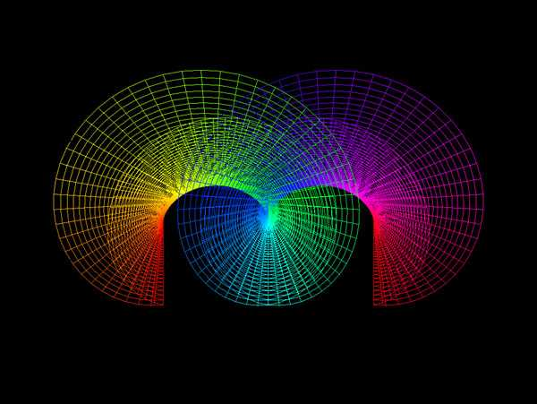
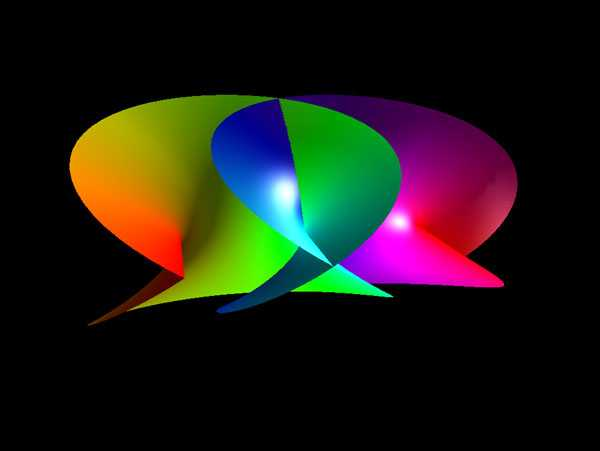
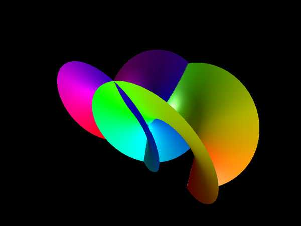
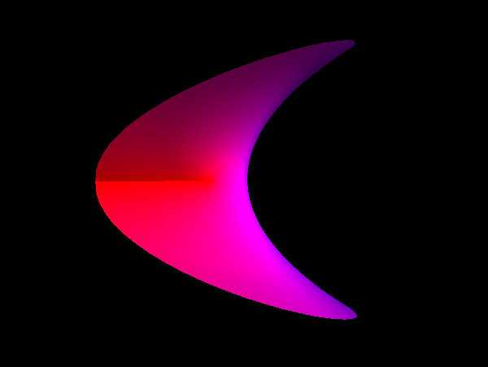

Catalan Minimal Surface
Written by Paul Bourke
December 2000
|
x = c (u - cosh(v) sin(u))
y = c (1 - cosh(v) cos(u)
z = -4 c sin(u/2) sinh(v/2)
-infinity <= u <= infinity
-infinity <= v <= infinity
|
The Catalan minimal surface (zero mean curvature) is
attributed to Eugene Catalan around 1855.




|